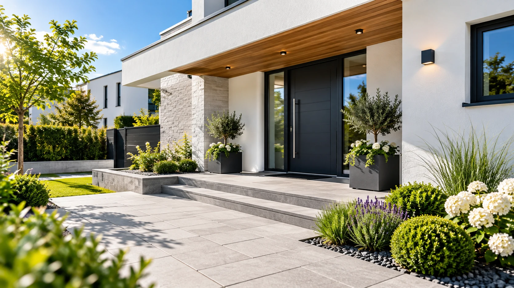
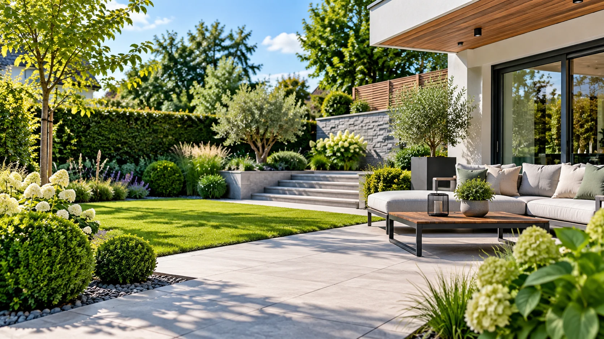
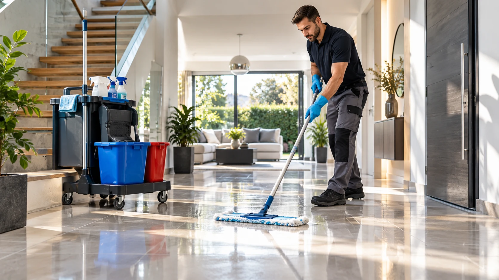
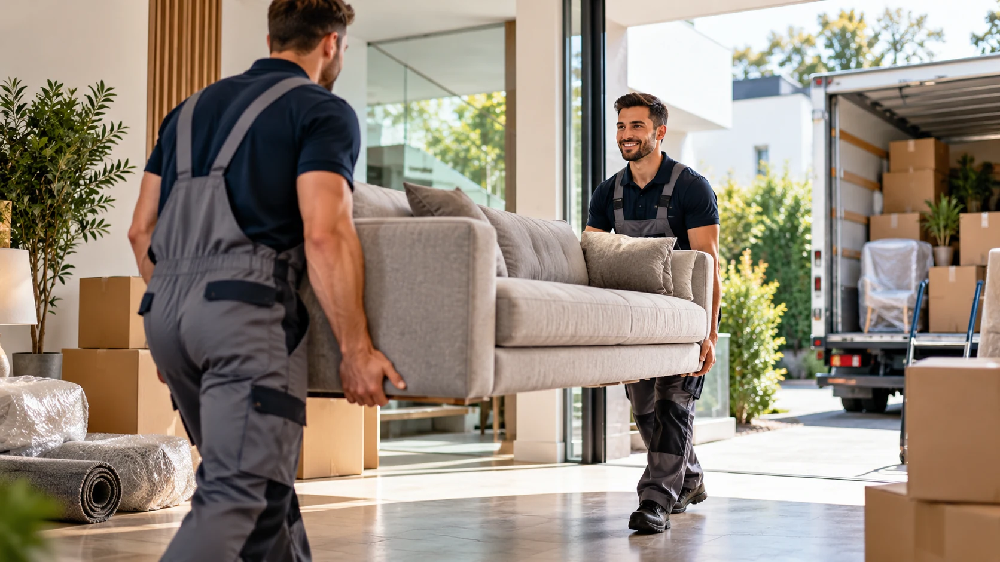

01 / REINIGUNG
Sauberkeit, die
man spürt.
Ein gepflegtes Umfeld macht den Unterschied – zu Hause und in gewerblich genutzten Räumen.
Haus & WohnungTreppenhausIndividuelle Reinigung
Ob saubere Räume, gepflegter Garten, freie Flächen oder ein anstehender Umzug: Rund ums Haus ist Ihr Ansprechpartner für die Aufgaben rund um Ihr Zuhause und Ihre Immobilie.



Jedes Objekt und jedes Vorhaben ist anders. Deshalb besprechen wir gemeinsam, welche Unterstützung Sie tatsächlich brauchen.
Ein gepflegtes Umfeld macht den Unterschied – zu Hause und in gewerblich genutzten Räumen.
Damit Außenbereiche einen guten Eindruck machen und Sie mehr Zeit zum Genießen haben.

Ob einzelne Räume oder größere Bereiche: Wir sprechen mit Ihnen über die passende Räumung.

Ein Umzug bringt viele Aufgaben mit sich. Sagen Sie uns, wobei Sie Unterstützung benötigen.
Viele Aufgaben rund ums Haus – aber nur ein Ansprechpartner. Ob einmalige Unterstützung oder wiederkehrende Arbeiten: Wir nehmen uns Zeit für Ihre Anfrage und besprechen gemeinsam die nächsten Schritte.
Kontakt aufnehmenSie schildern Ihr Anliegen und wir besprechen die passende Unterstützung.
Von Innenräumen über den Garten bis zur Räumung und zum Umzug.
Leistungsumfang und Termine werden individuell miteinander vereinbart.
Unkompliziert von der ersten Nachricht bis zur vereinbarten Dienstleistung.
Rufen Sie uns an oder beschreiben Sie Ihr Vorhaben über das Kontaktformular.
Wir klären, welche Arbeiten gewünscht sind und welche Bedingungen wichtig sind.
Nach gemeinsamer Vereinbarung kann die passende Unterstützung starten.
Ihre Frage ist nicht dabei? Melden Sie sich gerne direkt bei uns.
Frage per E-Mail stellen ↗Unsere vier Bereiche sind Reinigung, Gartenarbeit, Entrümpelung und Umzug. Welche konkreten Arbeiten möglich sind, klären wir gerne persönlich.
Beschreiben Sie uns einfach Ihren gesamten Bedarf. Wir besprechen, welche Leistungen sich gemeinsam organisieren lassen.
Am einfachsten per Telefon oder E-Mail. Teilen Sie uns möglichst den Einsatzort, die gewünschte Leistung und den ungefähren Umfang mit.
Ob Ihr Standort zum Einsatzgebiet gehört, klären wir gerne direkt mit Ihnen. Nennen Sie uns dafür Ihren Ort oder Ihre Postleitzahl.
Ja. Teilen Sie uns gerne Ihren Wunschzeitraum mit. Die konkrete Terminvergabe erfolgt nach Absprache und Verfügbarkeit.
Sie planen eine Reinigung, brauchen Hilfe im Garten, möchten etwas entrümpeln oder ziehen um? Beschreiben Sie uns kurz Ihr Anliegen.
RUND UMS HAUS / HAUSMANAGEMENTWir bereiten aus Ihren Angaben eine E-Mail vor, die Sie mit Ihrem E-Mail-Programm verschicken können.
Falls sich kein E-Mail-Programm geöffnet hat, können Sie den vorbereiteten Text kopieren und direkt an info.ums.haus@web.de senden.